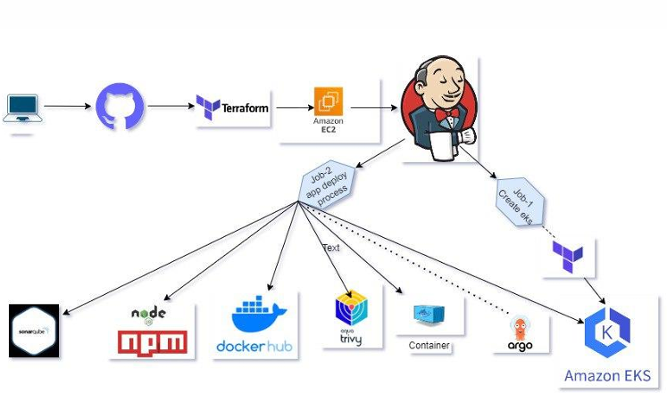

Project Overview
This project implements a production-like CI/CD pipeline for a Node.js web application (Hotstar sample) using Jenkins for orchestration, Terraform for infrastructure provisioning (EKS cluster + supporting resources), Docker for containerization, SonarQube & Trivy for code & image scanning, and ArgoCD for GitOps-based deployments into EKS. The portfolio page below highlights the high-level architecture, pipeline stages, tools used, and the key responsibilities / outcomes.
Architecture Diagram
CI/CD Pipeline — Stages
- Source: Developer pushes code to GitHub (branch-based workflows).
- Build (Jenkins): Multi-stage Jenkins pipeline checks out code, installs dependencies (npm), runs unit tests, and builds Docker images.
- Static Analysis: Jenkins triggers SonarQube scan and fails the pipeline on quality gate failure.
- Vulnerability Scan: Jenkins runs Trivy to scan built images for CVEs; pipeline blocks on high-risk findings.
- Push: Secure push of signed images to Docker Hub (or private registry) if scans pass.
- Provision Infra (Terraform): Terraform modules create EKS cluster, node groups, VPC, IAM roles, and supporting networking.
- Deploy (GitOps - ArgoCD): ArgoCD watches the Git repo and applies Kubernetes manifests/Helm charts to the EKS cluster to deploy the app.
- Observability & Rollback: Health checks, and rollback on failure via ArgoCD and Kubernetes readiness/liveness probes.
Tools & Tech
- CI/CD: Jenkins (Declarative pipelines), GitHub
- Infrastructure: Terraform (modules), AWS EKS, EC2, VPC, IAM
- Containerization: Docker, Docker Hub
- Quality & Security: SonarQube (quality gates), Trivy (image scanning)
- Deployment: ArgoCD (GitOps), Kubernetes manifests / Helm
- Scripting & Config: Bash, Jenkinsfile, YAML
Key Responsibilities & Achievements
- Designed and implemented Jenkins pipelines (build → test → scan → push → provision → deploy) with clear stage gating.
- Created Terraform modules to provision AWS EKS and related networking resources with remote state and workspaces.
- Integrated SonarQube for static analysis and enforced quality gates in the pipeline to maintain code health.
- Added Trivy scanning to detect vulnerabilities in container images and prevent unsafe images from being deployed.
- Automated container build & registry push, and implemented GitOps deployments via ArgoCD to enable safe, auditable rollouts.
- Documented the pipeline runbook and demo steps for interview / evaluation (linked PDF below).
How to run the demo (short)
- Clone repository and open Jenkinsfile to inspect pipeline stages.
- Ensure Jenkins has credentials: GitHub token, Docker registry credentials, AWS keys with limited IAM role for Terraform.
- Run pipeline → verify SonarQube and Trivy checks; on success, Terraform applies to provision EKS; ArgoCD syncs app manifests.
Download Full Project Report
For full implementation details, pipeline configs, and screenshots, download the project PDF (detailed):
Download Project PDF (full pipeline & configs)
(When you add the PDF to your repo or hosting, update the link to the public path e.g. docs/project3-hotstar.pdf or assets/project3-hotstar.pdf.)